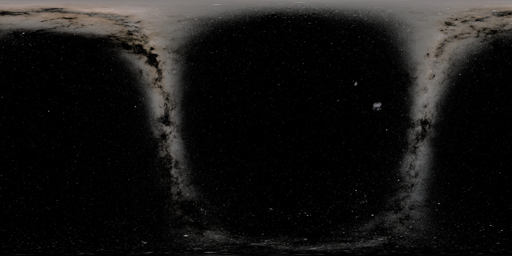
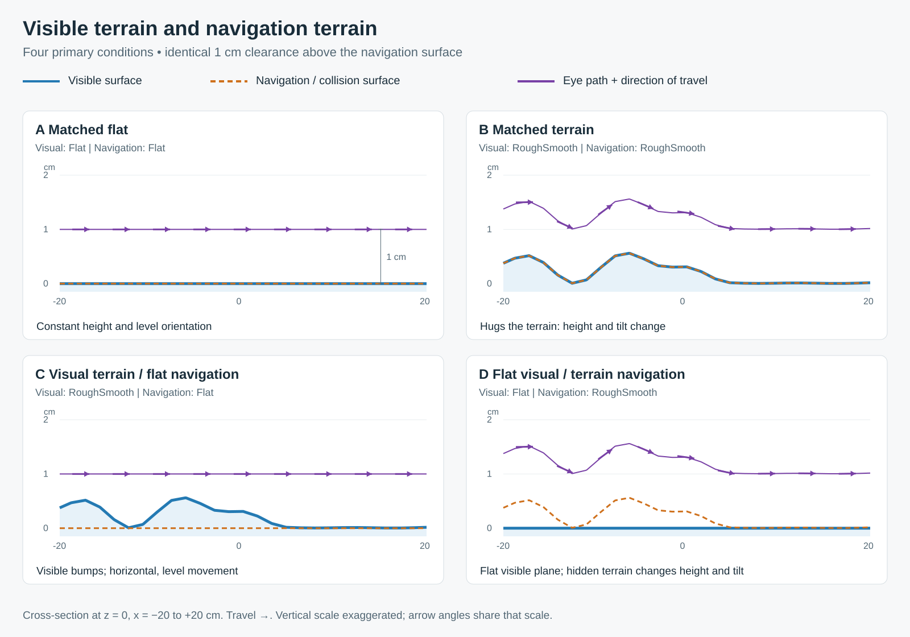
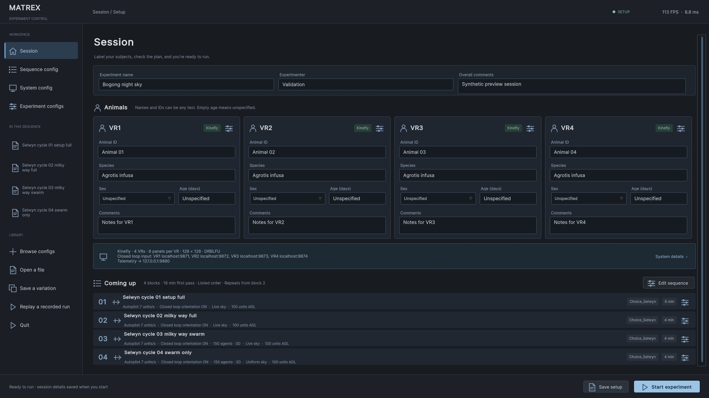
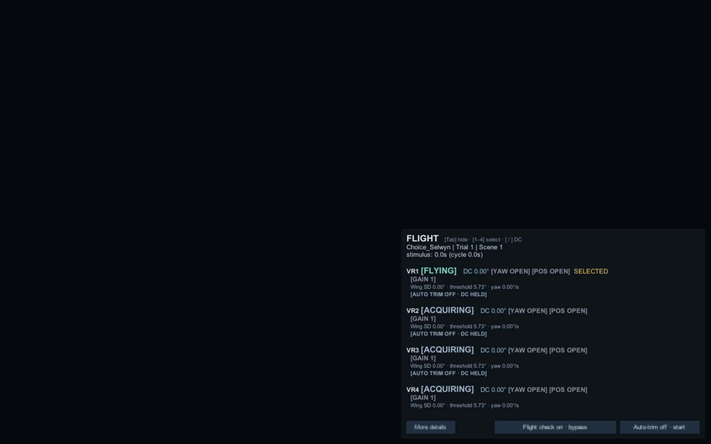

Windows
64-bit standalone player
View releasesZIP · uploaded assets onlyA virtual environment for animal experiments
Build repeatable experiments around an animal’s movement. Configure Choice tasks, collective motion and the night sky in Unity, with the JSON and recordings to explain what happened.
Windows · macOS · Linux / Unity Editor needed only to modify source

01 / Experimental environments
The included scenes cover common experiments. Change their parameters in the studio; extend scenes and assets in Unity when your experiment calls for more.

02 / Configure, run, understand
Work visually, or inspect the JSON directly. Both use the same document, including parameters the interface has never seen before.

Label animals, configure hardware and arrange sequence blocks. Switch among Choice, Swarm, Kannadi and other experimental recipes.
Unknown keys and exact untouched numbers survive edits. Omitted settings stay omitted. Undo and raw JSON remain within reach.
New runs capture system, sequence, experiment files and loaded inputs with hashes and versions alongside the recordings.
03 / During the experiment
The in-app dashboard brings tracking, flight detection, trim, heading, frame timing and errors into one operator view. Press Tab to show or hide it.
Use the separate ZMQ telemetry output for an external subscriber. This static website documents the software; live acquisition stays on your experiment computer.
Telemetry and recorded fields
A sky with a record
Choose latitude, longitude, date and local time—or let “now” resolve when the run starts. The bundled NASA star map and Astronomy Engine generate the orientation offline.
Each activated sky saves its texture, UTC sample time and provenance. This preview is an actual exported stimulus panorama; the renderer models stars and the Milky Way, without atmosphere, Sun, Moon or planets.
Inspect this preview’s manifestObserver latitude
148.453948°Observer longitude
30 minExample sky update interval
04 / Standalone releases
Download the application for your operating system. Extract the whole archive, keep its files together, and open the application. Configure tracking and display geometry for your apparatus before recording.
Checking GitHub for uploaded application archives.
64-bit standalone player
View releasesZIP · uploaded assets onlyDesktop player
View releasesZIP · uploaded assets onlyx86-64 desktop player
View releasesZIP · uploaded assets onlyPreserved before the configuration studio and telemetry integration.
Config UI, live dashboard, Bogong sky, modern Kannadi and terrain cue experiments.
Writable user profiles, animal metadata, lifecycle and replay improvements. See release notes for verified scope.
Availability comes from GitHub’s published release assets. If an OS archive is absent, its button opens the release page. Read the included START-HERE file for platform setup, configuration locations and the version’s startup behavior. macOS apps are ad hoc signed and not notarized.
Working from source?
Open the project in Unity 6000.3.16f1. Start with ControlScene, the complete JSON templates and the experiment workflow guide. Custom scenes are authored in Unity.